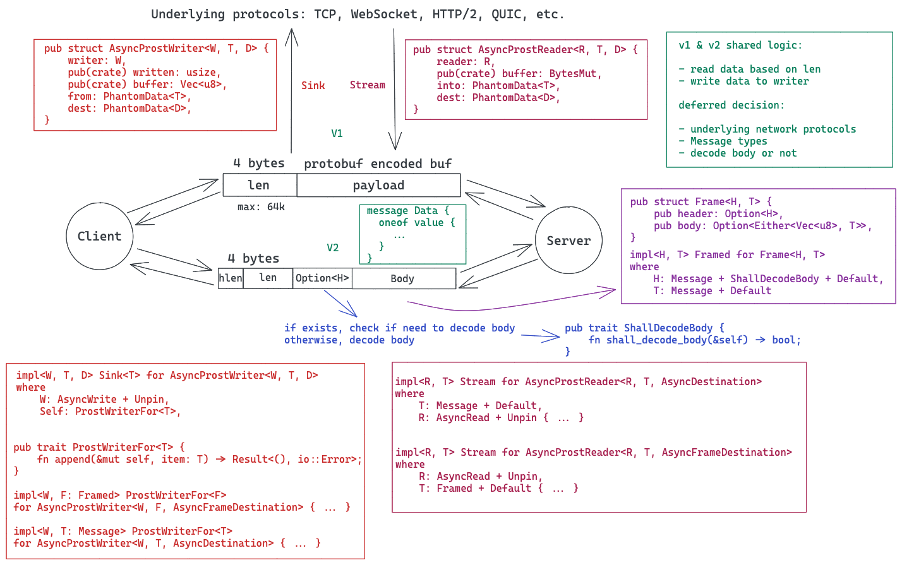
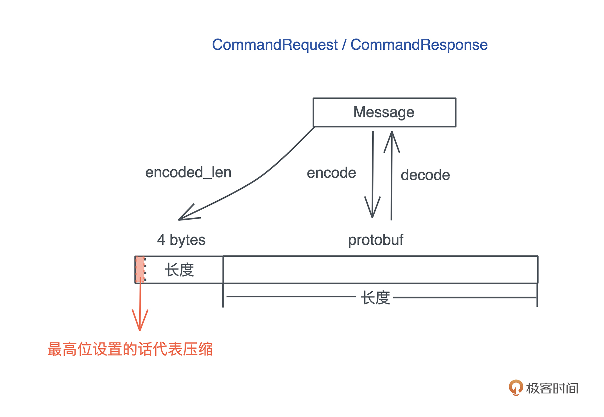

- 00 开篇词 让Rust成为你的下一门主力语言.md.html
- 01 内存：值放堆上还是放栈上，这是一个问题.md.html
- 02 串讲：编程开发中，那些你需要掌握的基本概念.md.html
- 03 初窥门径：从你的第一个Rust程序开始！.md.html
- 04 get hands dirty：来写个实用的CLI小工具.md.html
- 05 get hands dirty：做一个图片服务器有多难？.md.html
- 06 get hands dirty：SQL查询工具怎么一鱼多吃？.md.html
- 07 所有权：值的生杀大权到底在谁手上？.md.html
- 08 所有权：值的借用是如何工作的？.md.html
- 09 所有权：一个值可以有多个所有者么？.md.html
- 10 生命周期：你创建的值究竟能活多久？.md.html
- 11 内存管理：从创建到消亡，值都经历了什么？.md.html
- 12 类型系统：Rust的类型系统有什么特点？.md.html
- 13 类型系统：如何使用trait来定义接口？.md.html
- 14 类型系统：有哪些必须掌握的trait？.md.html
- 15 数据结构：这些浓眉大眼的结构竟然都是智能指针？.md.html
- 16 数据结构：Vec_T_、&[T]、Box_[T]_ ，你真的了解集合容器么？.md.html
- 17 数据结构：软件系统核心部件哈希表，内存如何布局？.md.html
- 18 错误处理：为什么Rust的错误处理与众不同？.md.html
- 19 闭包：FnOnce、FnMut和Fn，为什么有这么多类型？.md.html
- 20 4 Steps ：如何更好地阅读Rust源码？.md.html
- 21 阶段实操（1）：构建一个简单的KV server-基本流程.md.html
- 22 阶段实操（2）：构建一个简单的KV server-基本流程.md.html
- 23 类型系统：如何在实战中使用泛型编程？.md.html
- 24 类型系统：如何在实战中使用trait object？.md.html
- 25 类型系统：如何围绕trait来设计和架构系统？.md.html
- 26 阶段实操（3）：构建一个简单的KV server-高级trait技巧.md.html
- 27 生态系统：有哪些常有的Rust库可以为我所用？.md.html
- 28 网络开发（上）：如何使用Rust处理网络请求？.md.html
- 29 网络开发（下）：如何使用Rust处理网络请求？.md.html
- 30 Unsafe Rust：如何用C++的方式打开Rust？.md.html
- 31 FFI：Rust如何和你的语言架起沟通桥梁？.md.html
- 32 实操项目：使用PyO3开发Python3模块.md.html
- 33 并发处理（上）：从atomics到Channel，Rust都提供了什么工具？.md.html
- 34 并发处理（下）：从atomics到Channel，Rust都提供了什么工具？.md.html
- 35 实操项目：如何实现一个基本的MPSC channel？.md.html
- 36 阶段实操（4）：构建一个简单的KV server-网络处理.md.html
- 37 阶段实操（5）：构建一个简单的KV server-网络安全.md.html
- 38 异步处理：Future是什么？它和async_await是什么关系？.md.html
- 39 异步处理：async_await内部是怎么实现的？.md.html
- 40 异步处理：如何处理异步IO？.md.html
- 41 阶段实操（6）：构建一个简单的KV server-异步处理.md.html
- 42 阶段实操（7）：构建一个简单的KV server-如何做大的重构？.md.html
- 43 生产环境：真实世界下的一个Rust项目包含哪些要素？.md.html
- 44 数据处理：应用程序和数据如何打交道？.md.html
- 45 阶段实操（8）：构建一个简单的KV server-配置_测试_监控_CI_CD.md.html
- 46 软件架构：如何用Rust架构复杂系统？.md.html
- 加餐 Rust2021版次问世了！.md.html
- 加餐 代码即数据：为什么我们需要宏编程能力？.md.html
- 加餐 宏编程（上）：用最“笨”的方式撰写宏.md.html
- 加餐 宏编程（下）：用 syn_quote 优雅地构建宏.md.html
- 加餐 愚昧之巅：你的Rust学习常见问题汇总.md.html
- 加餐 期中测试：参考实现讲解.md.html
- 加餐 期中测试：来写一个简单的grep命令行.md.html
- 加餐 这个专栏你可以怎么学，以及Rust是否值得学？.md.html
- 大咖助场 开悟之坡（上）：Rust的现状、机遇与挑战.md.html
- 大咖助场 开悟之坡（下）：Rust的现状、机遇与挑战.md.html
- 特别策划 学习锦囊（一）：听听课代表们怎么说.md.html
- 特别策划 学习锦囊（三）：听听课代表们怎么说.md.html
- 特别策划 学习锦囊（二）：听听课代表们怎么说.md.html
- 用户故事 绝望之谷：改变从学习开始.md.html
- 用户故事 语言不仅是工具，还是思维方式.md.html
- 结束语 永续之原：Rust学习，如何持续精进？.md.html
- 捐赠
36 阶段实操（4）：构建一个简单的KV server-网络处理
你好，我是陈天。
经历了基础篇和进阶篇中两讲的构建和优化，到现在，我们的KV server 核心功能已经比较完善了。不知道你有没有注意，之前一直在使用一个神秘的 async-prost 库，我们神奇地完成了TCP frame 的封包和解包。是怎么完成的呢？
async-prost 是我仿照 Jonhoo 的 async-bincode 做的一个处理 protobuf frame 的库，它可以和各种网络协议适配，包括 TCP/WebSocket/HTTP2 等。由于考虑通用性，它的抽象级别比较高，用了大量的泛型参数，主流程如下图所示：- 
主要的思路就是在序列化数据的时候，添加一个头部来提供 frame 的长度，反序列化的时候，先读出头部，获得长度，再读取相应的数据。感兴趣的同学可以去看代码，这里就不展开了。
今天我们的挑战就是，在上一次完成的 KV server 的基础上，来试着不依赖 async-prost，自己处理封包和解包的逻辑。如果你掌握了这个能力，配合 protobuf，就可以设计出任何可以承载实际业务的协议了。
如何定义协议的 Frame？
protobuf 帮我们解决了协议消息如何定义的问题，然而一个消息和另一个消息之间如何区分，是个伤脑筋的事情。我们需要定义合适的分隔符。
分隔符 + 消息数据，就是一个 Frame。之前在28网络开发[那一讲]简单说过如何界定一个frame。
很多基于 TCP 的协议会使用 \r\n 做分隔符，比如 FTP；也有使用消息长度做分隔符的，比如 gRPC；还有混用两者的，比如 Redis 的 RESP；更复杂的如 HTTP，header 之间使用 \r\n 分隔，header/body 之间使用 \r\n\r\n，header 中会提供 body 的长度等等。
“\r\n” 这样的分隔符，适合协议报文是 ASCII 数据；而通过长度进行分隔，适合协议报文是二进制数据。我们的 KV Server 承载的 protobuf 是二进制，所以就在 payload 之前放一个长度，来作为 frame 的分隔。
这个长度取什么大小呢？如果使用 2 个字节，那么 payload 最大是 64k；如果使用 4 个字节，payload 可以到 4G。一般的应用取 4 个字节就足够了。如果你想要更灵活些，也可以使用 varint。
tokio 有个 tokio-util 库，已经帮我们处理了和 frame 相关的封包解包的主要需求，包括 LinesDelimited（处理 \r\n 分隔符）和 LengthDelimited（处理长度分隔符）。我们可以使用它的 LengthDelimitedCodec 尝试一下。
首先在 Cargo.toml 里添加依赖：
[dev-dependencies]
...
tokio-util = { version = "0.6", features = ["codec"]}
...
然后创建 examples/server_with_codec.rs 文件，添入如下代码：
use anyhow::Result;
use futures::prelude::*;
use kv2::{CommandRequest, MemTable, Service, ServiceInner};
use prost::Message;
use tokio::net::TcpListener;
use tokio_util::codec::{Framed, LengthDelimitedCodec};
use tracing::info;
#[tokio::main]
async fn main() -> Result<()> {
tracing_subscriber::fmt::init();
let service: Service = ServiceInner::new(MemTable::new()).into();
let addr = "127.0.0.1:9527";
let listener = TcpListener::bind(addr).await?;
info!("Start listening on {}", addr);
loop {
let (stream, addr) = listener.accept().await?;
info!("Client {:?} connected", addr);
let svc = service.clone();
tokio::spawn(async move {
let mut stream = Framed::new(stream, LengthDelimitedCodec::new());
while let Some(Ok(mut buf)) = stream.next().await {
let cmd = CommandRequest::decode(&buf[..]).unwrap();
info!("Got a new command: {:?}", cmd);
let res = svc.execute(cmd);
buf.clear();
res.encode(&mut buf).unwrap();
stream.send(buf.freeze()).await.unwrap();
}
info!("Client {:?} disconnected", addr);
});
}
}
你可以对比一下它和之前的 examples/server.rs 的差别，主要改动了这一行：
// let mut stream = AsyncProstStream::<_, CommandRequest, CommandResponse, _>::from(stream).for_async();
let mut stream = Framed::new(stream, LengthDelimitedCodec::new());
完成之后，我们打开一个命令行窗口，运行：RUST_LOG=info cargo run --example server_with_codec --quiet。然后在另一个命令行窗口，运行：RUST_LOG=info cargo run --example client --quiet。此时，服务器和客户端都收到了彼此的请求和响应，并且处理正常。
你这会是不是有点疑惑，为什么客户端没做任何修改也能和服务器通信？那是因为在目前的使用场景下，使用 AsyncProst 的客户端兼容 LengthDelimitedCodec。
如何撰写处理 Frame 的代码？
LengthDelimitedCodec 非常好用，它的代码也并不复杂，非常建议你有空研究一下。既然这一讲主要围绕网络开发展开，那么我们也来尝试一下撰写自己的对 Frame 处理的代码吧。
按照前面分析，我们在 protobuf payload 前加一个 4 字节的长度，这样，对端读取数据时，可以先读 4 字节，然后根据读到的长度，进一步读取满足这个长度的数据，之后就可以用相应的数据结构解包了。
为了更贴近实际，我们把4字节长度的最高位拿出来作为是否压缩的信号，如果设置了，代表后续的 payload 是 gzip 压缩过的 protobuf，否则直接是 protobuf：- 
按照惯例，还是先来定义处理这个逻辑的 trait：
pub trait FrameCoder
where
Self: Message + Sized + Default,
{
/// 把一个 Message encode 成一个 frame
fn encode_frame(&self, buf: &mut BytesMut) -> Result<(), KvError>;
/// 把一个完整的 frame decode 成一个 Message
fn decode_frame(buf: &mut BytesMut) -> Result<Self, KvError>;
}
定义了两个方法：
- encode_frame() 可以把诸如 CommandRequest 这样的消息封装成一个 frame，写入传进来的 BytesMut；
- decode_frame() 可以把收到的一个完整的、放在 BytesMut 中的数据，解封装成诸如 CommandRequest 这样的消息。
如果要实现这个 trait，Self 需要实现了 prost::Message，大小是固定的，并且实现了 Default（prost 的需求）。
好，我们再写实现代码。首先创建 src/network 目录，并在其下添加两个文件mod.rs 和 frame.rs。然后在 src/network/mod.rs 里引入 src/network/frame.rs：
mod frame;
pub use frame::FrameCoder;
同时在 lib.rs 里引入 network：
mod network;
pub use network::*;
因为要处理 gzip 压缩，还需要在 Cargo.toml 中引入 flate2，同时，因为今天这一讲引入了网络相关的操作和数据结构，我们需要把 tokio 从 dev-dependencies 移到 dependencies 里，为简单起见，就用 full features：
[dependencies]
...
flate2 = "1" # gzip 压缩
...
tokio = { version = "1", features = ["full"] } # 异步网络库
...
然后，在 src/network/frame.rs 里添加 trait 和实现 trait 的代码：
use std::io::{Read, Write};
use crate::{CommandRequest, CommandResponse, KvError};
use bytes::{Buf, BufMut, BytesMut};
use flate2::{read::GzDecoder, write::GzEncoder, Compression};
use prost::Message;
use tokio::io::{AsyncRead, AsyncReadExt};
use tracing::debug;
/// 长度整个占用 4 个字节
pub const LEN_LEN: usize = 4;
/// 长度占 31 bit，所以最大的 frame 是 2G
const MAX_FRAME: usize = 2 * 1024 * 1024 * 1024;
/// 如果 payload 超过了 1436 字节，就做压缩
const COMPRESSION_LIMIT: usize = 1436;
/// 代表压缩的 bit（整个长度 4 字节的最高位）
const COMPRESSION_BIT: usize = 1 << 31;
/// 处理 Frame 的 encode/decode
pub trait FrameCoder
where
Self: Message + Sized + Default,
{
/// 把一个 Message encode 成一个 frame
fn encode_frame(&self, buf: &mut BytesMut) -> Result<(), KvError> {
let size = self.encoded_len();
if size >= MAX_FRAME {
return Err(KvError::FrameError);
}
// 我们先写入长度，如果需要压缩，再重写压缩后的长度
buf.put_u32(size as _);
if size > COMPRESSION_LIMIT {
let mut buf1 = Vec::with_capacity(size);
self.encode(&mut buf1)?;
// BytesMut 支持逻辑上的 split（之后还能 unsplit）
// 所以我们先把长度这 4 字节拿走，清除
let payload = buf.split_off(LEN_LEN);
buf.clear();
// 处理 gzip 压缩，具体可以参考 flate2 文档
let mut encoder = GzEncoder::new(payload.writer(), Compression::default());
encoder.write_all(&buf1[..])?;
// 压缩完成后，从 gzip encoder 中把 BytesMut 再拿回来
let payload = encoder.finish()?.into_inner();
debug!("Encode a frame: size {}({})", size, payload.len());
// 写入压缩后的长度
buf.put_u32((payload.len() | COMPRESSION_BIT) as _);
// 把 BytesMut 再合并回来
buf.unsplit(payload);
Ok(())
} else {
self.encode(buf)?;
Ok(())
}
}
/// 把一个完整的 frame decode 成一个 Message
fn decode_frame(buf: &mut BytesMut) -> Result<Self, KvError> {
// 先取 4 字节，从中拿出长度和 compression bit
let header = buf.get_u32() as usize;
let (len, compressed) = decode_header(header);
debug!("Got a frame: msg len {}, compressed {}", len, compressed);
if compressed {
// 解压缩
let mut decoder = GzDecoder::new(&buf[..len]);
let mut buf1 = Vec::with_capacity(len * 2);
decoder.read_to_end(&mut buf1)?;
buf.advance(len);
// decode 成相应的消息
Ok(Self::decode(&buf1[..buf1.len()])?)
} else {
let msg = Self::decode(&buf[..len])?;
buf.advance(len);
Ok(msg)
}
}
}
impl FrameCoder for CommandRequest {}
impl FrameCoder for CommandResponse {}
fn decode_header(header: usize) -> (usize, bool) {
let len = header & !COMPRESSION_BIT;
let compressed = header & COMPRESSION_BIT == COMPRESSION_BIT;
(len, compressed)
}
这段代码本身并不难理解。我们直接为 FrameCoder 提供了缺省实现，然后 CommandRequest/CommandResponse 做了空实现。其中使用了之前介绍过的 bytes 库里的 BytesMut，以及新引入的 GzEncoder/GzDecoder。你可以按照 [20 讲]介绍的阅读源码的方式，了解这几个数据类型的用法。最后还写了个辅助函数 decode_header()，让 decode_frame() 的代码更直观一些。
如果你有些疑惑为什么 COMPRESSION_LIMIT 设成 1436？
这是因为以太网的 MTU 是 1500，除去 IP 头 20 字节、TCP 头 20 字节，还剩 1460；一般 TCP 包会包含一些 Option（比如 timestamp），IP 包也可能包含，所以我们预留 20 字节；再减去 4 字节的长度，就是1436，不用分片的最大消息长度。如果大于这个，很可能会导致分片，我们就干脆压缩一下。
现在，CommandRequest/CommandResponse 就可以做 frame 级别的处理了，我们写一些测试验证是否工作。还是在 src/network/frame.rs 里，添加测试代码：
#[cfg(test)]
mod tests {
use super::*;
use crate::Value;
use bytes::Bytes;
#[test]
fn command_request_encode_decode_should_work() {
let mut buf = BytesMut::new();
let cmd = CommandRequest::new_hdel("t1", "k1");
cmd.encode_frame(&mut buf).unwrap();
// 最高位没设置
assert_eq!(is_compressed(&buf), false);
let cmd1 = CommandRequest::decode_frame(&mut buf).unwrap();
assert_eq!(cmd, cmd1);
}
#[test]
fn command_response_encode_decode_should_work() {
let mut buf = BytesMut::new();
let values: Vec<Value> = vec![1.into(), "hello".into(), b"data".into()];
let res: CommandResponse = values.into();
res.encode_frame(&mut buf).unwrap();
// 最高位没设置
assert_eq!(is_compressed(&buf), false);
let res1 = CommandResponse::decode_frame(&mut buf).unwrap();
assert_eq!(res, res1);
}
#[test]
fn command_response_compressed_encode_decode_should_work() {
let mut buf = BytesMut::new();
let value: Value = Bytes::from(vec![0u8; COMPRESSION_LIMIT + 1]).into();
let res: CommandResponse = value.into();
res.encode_frame(&mut buf).unwrap();
// 最高位设置了
assert_eq!(is_compressed(&buf), true);
let res1 = CommandResponse::decode_frame(&mut buf).unwrap();
assert_eq!(res, res1);
}
fn is_compressed(data: &[u8]) -> bool {
if let &[v] = &data[..1] {
v >> 7 == 1
} else {
false
}
}
}
这个测试代码里面有从 [u8; N] 到 Value（b"data".into()） 以及从 Bytes 到 Value 的转换，所以我们需要在 src/pb/mod.rs 里添加 From trait 的相应实现：
impl<const N: usize> From<&[u8; N]> for Value {
fn from(buf: &[u8; N]) -> Self {
Bytes::copy_from_slice(&buf[..]).into()
}
}
impl From<Bytes> for Value {
fn from(buf: Bytes) -> Self {
Self {
value: Some(value::Value::Binary(buf)),
}
}
}
运行 cargo test ，所有测试都可以通过。
到这里，我们就完成了 Frame 的序列化（encode_frame）和反序列化（decode_frame），并且用测试确保它的正确性。做网络开发的时候，要尽可能把实现逻辑和 IO 分离，这样有助于可测性以及应对未来 IO 层的变更。目前，这个代码没有触及任何和 socket IO 相关的内容，只是纯逻辑，接下来我们要将它和我们用于处理服务器客户端的 TcpStream 联系起来。
在进一步写网络相关的代码前，还有一个问题需要解决：decode_frame() 函数使用的 BytesMut，是如何从 socket 里拿出来的？显然，先读 4 个字节，取出长度 N，然后再读 N 个字节。这个细节和 frame 关系很大，所以还需要在 src/network/frame.rs 里写个辅助函数 read_frame()：
/// 从 stream 中读取一个完整的 frame
pub async fn read_frame<S>(stream: &mut S, buf: &mut BytesMut) -> Result<(), KvError>
where
S: AsyncRead + Unpin + Send,
{
let header = stream.read_u32().await? as usize;
let (len, _compressed) = decode_header(header);
// 如果没有这么大的内存，就分配至少一个 frame 的内存，保证它可用
buf.reserve(LEN_LEN + len);
buf.put_u32(header as _);
// advance_mut 是 unsafe 的原因是，从当前位置 pos 到 pos + len，
// 这段内存目前没有初始化。我们就是为了 reserve 这段内存，然后从 stream
// 里读取，读取完，它就是初始化的。所以，我们这么用是安全的
unsafe { buf.advance_mut(len) };
stream.read_exact(&mut buf[LEN_LEN..]).await?;
Ok(())
}
在写 read_frame() 时，我们不希望它只能被用于 TcpStream，这样太不灵活，所以用了泛型参数 S，要求传入的 S 必须满足 AsyncRead + Unpin + Send。我们来看看这3个约束。
AsyncRead 是 tokio 下的一个 trait，用于做异步读取，它有一个方法 poll_read()：
pub trait AsyncRead {
fn poll_read(
self: Pin<&mut Self>,
cx: &mut Context<'_>,
buf: &mut ReadBuf<'_>
) -> Poll<Result<()>>;
}
一旦某个数据结构实现了 AsyncRead，它就可以使用 AsyncReadExt 提供的多达 29 个辅助方法。这是因为任何实现了 AsyncRead 的数据结构，都自动实现了 AsyncReadExt：
impl<R: AsyncRead + ?Sized> AsyncReadExt for R {}
我们虽然还没有正式学怎么做异步处理，但是之前已经看到了很多 async/await 的代码。
异步处理，目前你可以把它想象成一个内部有个状态机的数据结构，异步运行时根据需要不断地对其做 poll 操作，直到它返回 Poll::Ready，说明得到了处理结果；如果它返回 Poll::Pending，说明目前还无法继续，异步运行时会将其挂起，等下次某个事件将这个任务唤醒。
对于 Socket 来说，读取 socket 就是一个不断 poll_read() 的过程，直到读到了满足 ReadBuf 需要的内容。
至于 Send 约束，很好理解，S 需要能在不同线程间移动所有权。对于 Unpin 约束，未来讲 Future 的时候再具体说。现在你就权且记住，如果编译器抱怨一个泛型参数 “cannot be unpinned” ，一般来说，这个泛型参数需要加 Unpin 的约束。你可以试着把 Unpin 去掉，看看编译器的报错。
好，既然又写了一些代码，自然需为其撰写相应的测试。但是，要测 read_frame() 函数，需要一个支持 AsyncRead 的数据结构，虽然 TcpStream 支持它，但是我们不应该在单元测试中引入太过复杂的行为。为了测试 read_frame() 而建立 TCP 连接，显然没有必要。怎么办？
在[第 25 讲]，我们聊过测试代码和产品代码同等的重要性，所以，在开发中，也要为测试代码创建合适的生态环境，让测试简洁、可读性强。那这里，我们就创建一个简单的数据结构，使其实现 AsyncRead，这样就可以“单元”测试 read_frame() 了。
在 src/network/frame.rs 里的 mod tests 下加入：
#[cfg(test)]
mod tests {
struct DummyStream {
buf: BytesMut,
}
impl AsyncRead for DummyStream {
fn poll_read(
self: std::pin::Pin<&mut Self>,
_cx: &mut std::task::Context<'_>,
buf: &mut tokio::io::ReadBuf<'_>,
) -> std::task::Poll<std::io::Result<()>> {
// 看看 ReadBuf 需要多大的数据
let len = buf.capacity();
// split 出这么大的数据
let data = self.get_mut().buf.split_to(len);
// 拷贝给 ReadBuf
buf.put_slice(&data);
// 直接完工
std::task::Poll::Ready(Ok(()))
}
}
}
因为只需要保证 AsyncRead 接口的正确性，所以不需要太复杂的逻辑，我们就放一个 buffer，poll_read() 需要读多大的数据，我们就给多大的数据。有了这个 DummyStream，就可以测试 read_frame() 了：
#[tokio::test]
async fn read_frame_should_work() {
let mut buf = BytesMut::new();
let cmd = CommandRequest::new_hdel("t1", "k1");
cmd.encode_frame(&mut buf).unwrap();
let mut stream = DummyStream { buf };
let mut data = BytesMut::new();
read_frame(&mut stream, &mut data).await.unwrap();
let cmd1 = CommandRequest::decode_frame(&mut data).unwrap();
assert_eq!(cmd, cmd1);
}
运行 “cargo test”，测试通过。如果你的代码无法编译，可以看看编译错误，是不是缺了一些 use 语句来把某些数据结构和 trait 引入。你也可以对照 GitHub 上的代码修改。
让网络层可以像 AsyncProst 那样方便使用
现在，我们的 frame 已经可以正常工作了。接下来要构思一下，服务端和客户端该如何封装。
对于服务器，我们期望可以对 accept 下来的 TcpStream 提供一个 process() 方法，处理协议的细节：
#[tokio::main]
async fn main() -> Result<()> {
tracing_subscriber::fmt::init();
let addr = "127.0.0.1:9527";
let service: Service = ServiceInner::new(MemTable::new()).into();
let listener = TcpListener::bind(addr).await?;
info!("Start listening on {}", addr);
loop {
let (stream, addr) = listener.accept().await?;
info!("Client {:?} connected", addr);
let stream = ProstServerStream::new(stream, service.clone());
tokio::spawn(async move { stream.process().await });
}
}
这个 process() 方法，实际上就是对 examples/server.rs 中 tokio::spawn 里的 while loop 的封装：
while let Some(Ok(cmd)) = stream.next().await {
info!("Got a new command: {:?}", cmd);
let res = svc.execute(cmd);
stream.send(res).await.unwrap();
}
对客户端，我们也希望可以直接 execute() 一个命令，就能得到结果：
#[tokio::main]
async fn main() -> Result<()> {
tracing_subscriber::fmt::init();
let addr = "127.0.0.1:9527";
// 连接服务器
let stream = TcpStream::connect(addr).await?;
let mut client = ProstClientStream::new(stream);
// 生成一个 HSET 命令
let cmd = CommandRequest::new_hset("table1", "hello", "world".to_string().into());
// 发送 HSET 命令
let data = client.execute(cmd).await?;
info!("Got response {:?}", data);
Ok(())
}
这个 execute()，实际上就是对 examples/client.rs 中发送和接收代码的封装：
client.send(cmd).await?;
if let Some(Ok(data)) = client.next().await {
info!("Got response {:?}", data);
}
这样的代码，看起来很简洁，维护起来也很方便。
好，先看服务器处理一个 TcpStream 的数据结构，它需要包含 TcpStream，还有我们之前创建的用于处理客户端命令的 Service。所以，让服务器处理 TcpStream 的结构包含这两部分：
pub struct ProstServerStream<S> {
inner: S,
service: Service,
}
而客户端处理 TcpStream 的结构就只需要包含 TcpStream：
pub struct ProstClientStream<S> {
inner: S,
}
这里，依旧使用了泛型参数 S。未来，如果要支持 WebSocket，或者在 TCP 之上支持 TLS，它都可以让我们无需改变这一层的代码。
接下来就是具体的实现。有了 frame 的封装，服务器的 process() 方法和客户端的 execute() 方法都很容易实现。我们直接在 src/network/mod.rs 里添加完整代码：
mod frame;
use bytes::BytesMut;
pub use frame::{read_frame, FrameCoder};
use tokio::io::{AsyncRead, AsyncWrite, AsyncWriteExt};
use tracing::info;
use crate::{CommandRequest, CommandResponse, KvError, Service};
/// 处理服务器端的某个 accept 下来的 socket 的读写
pub struct ProstServerStream<S> {
inner: S,
service: Service,
}
/// 处理客户端 socket 的读写
pub struct ProstClientStream<S> {
inner: S,
}
impl<S> ProstServerStream<S>
where
S: AsyncRead + AsyncWrite + Unpin + Send,
{
pub fn new(stream: S, service: Service) -> Self {
Self {
inner: stream,
service,
}
}
pub async fn process(mut self) -> Result<(), KvError> {
while let Ok(cmd) = self.recv().await {
info!("Got a new command: {:?}", cmd);
let res = self.service.execute(cmd);
self.send(res).await?;
}
// info!("Client {:?} disconnected", self.addr);
Ok(())
}
async fn send(&mut self, msg: CommandResponse) -> Result<(), KvError> {
let mut buf = BytesMut::new();
msg.encode_frame(&mut buf)?;
let encoded = buf.freeze();
self.inner.write_all(&encoded[..]).await?;
Ok(())
}
async fn recv(&mut self) -> Result<CommandRequest, KvError> {
let mut buf = BytesMut::new();
let stream = &mut self.inner;
read_frame(stream, &mut buf).await?;
CommandRequest::decode_frame(&mut buf)
}
}
impl<S> ProstClientStream<S>
where
S: AsyncRead + AsyncWrite + Unpin + Send,
{
pub fn new(stream: S) -> Self {
Self { inner: stream }
}
pub async fn execute(&mut self, cmd: CommandRequest) -> Result<CommandResponse, KvError> {
self.send(cmd).await?;
Ok(self.recv().await?)
}
async fn send(&mut self, msg: CommandRequest) -> Result<(), KvError> {
let mut buf = BytesMut::new();
msg.encode_frame(&mut buf)?;
let encoded = buf.freeze();
self.inner.write_all(&encoded[..]).await?;
Ok(())
}
async fn recv(&mut self) -> Result<CommandResponse, KvError> {
let mut buf = BytesMut::new();
let stream = &mut self.inner;
read_frame(stream, &mut buf).await?;
CommandResponse::decode_frame(&mut buf)
}
}
这段代码不难阅读，基本上和 frame 的测试代码大同小异。
当然了，我们还是需要写段代码来测试客户端和服务器交互的整个流程：
#[cfg(test)]
mod tests {
use anyhow::Result;
use bytes::Bytes;
use std::net::SocketAddr;
use tokio::net::{TcpListener, TcpStream};
use crate::{assert_res_ok, MemTable, ServiceInner, Value};
use super::*;
#[tokio::test]
async fn client_server_basic_communication_should_work() -> anyhow::Result<()> {
let addr = start_server().await?;
let stream = TcpStream::connect(addr).await?;
let mut client = ProstClientStream::new(stream);
// 发送 HSET，等待回应
let cmd = CommandRequest::new_hset("t1", "k1", "v1".into());
let res = client.execute(cmd).await.unwrap();
// 第一次 HSET 服务器应该返回 None
assert_res_ok(res, &[Value::default()], &[]);
// 再发一个 HSET
let cmd = CommandRequest::new_hget("t1", "k1");
let res = client.execute(cmd).await?;
// 服务器应该返回上一次的结果
assert_res_ok(res, &["v1".into()], &[]);
Ok(())
}
#[tokio::test]
async fn client_server_compression_should_work() -> anyhow::Result<()> {
let addr = start_server().await?;
let stream = TcpStream::connect(addr).await?;
let mut client = ProstClientStream::new(stream);
let v: Value = Bytes::from(vec![0u8; 16384]).into();
let cmd = CommandRequest::new_hset("t2", "k2", v.clone().into());
let res = client.execute(cmd).await?;
assert_res_ok(res, &[Value::default()], &[]);
let cmd = CommandRequest::new_hget("t2", "k2");
let res = client.execute(cmd).await?;
assert_res_ok(res, &[v.into()], &[]);
Ok(())
}
async fn start_server() -> Result<SocketAddr> {
let listener = TcpListener::bind("127.0.0.1:0").await.unwrap();
let addr = listener.local_addr().unwrap();
tokio::spawn(async move {
loop {
let (stream, _) = listener.accept().await.unwrap();
let service: Service = ServiceInner::new(MemTable::new()).into();
let server = ProstServerStream::new(stream, service);
tokio::spawn(server.process());
}
});
Ok(addr)
}
}
测试代码基本上是之前 examples 下的 server.rs/client.rs 中的内容。我们测试了不做压缩和做压缩的两种情况。运行 cargo test ，应该所有测试都通过了。
正式创建 kv-server 和 kv-client
我们之前写了很多代码，真正可运行的 server/client 都是 examples 下的代码。现在我们终于要正式创建 kv-server/kv-client 了。
首先在 Cargo.toml 中，加入两个可执行文件：kvs（kv-server）和 kvc（kv-client）。还需要把一些依赖移动到 dependencies 下。修改之后，Cargo.toml 长这个样子：
[package]
name = "kv2"
version = "0.1.0"
edition = "2018"
[[bin]]
name = "kvs"
path = "src/server.rs"
[[bin]]
name = "kvc"
path = "src/client.rs"
[dependencies]
anyhow = "1" # 错误处理
bytes = "1" # 高效处理网络 buffer 的库
dashmap = "4" # 并发 HashMap
flate2 = "1" # gzip 压缩
http = "0.2" # 我们使用 HTTP status code 所以引入这个类型库
prost = "0.8" # 处理 protobuf 的代码
sled = "0.34" # sled db
thiserror = "1" # 错误定义和处理
tokio = { version = "1", features = ["full" ] } # 异步网络库
tracing = "0.1" # 日志处理
tracing-subscriber = "0.2" # 日志处理
[dev-dependencies]
async-prost = "0.2.1" # 支持把 protobuf 封装成 TCP frame
futures = "0.3" # 提供 Stream trait
tempfile = "3" # 处理临时目录和临时文件
tokio-util = { version = "0.6", features = ["codec"]}
[build-dependencies]
prost-build = "0.8" # 编译 protobuf
然后，创建 src/client.rs 和 src/server.rs，分别写入下面的代码。src/client.rs：
use anyhow::Result;
use kv2::{CommandRequest, ProstClientStream};
use tokio::net::TcpStream;
use tracing::info;
#[tokio::main]
async fn main() -> Result<()> {
tracing_subscriber::fmt::init();
let addr = "127.0.0.1:9527";
// 连接服务器
let stream = TcpStream::connect(addr).await?;
let mut client = ProstClientStream::new(stream);
// 生成一个 HSET 命令
let cmd = CommandRequest::new_hset("table1", "hello", "world".to_string().into());
// 发送 HSET 命令
let data = client.execute(cmd).await?;
info!("Got response {:?}", data);
Ok(())
}
src/server.rs：
use anyhow::Result;
use kv2::{MemTable, ProstServerStream, Service, ServiceInner};
use tokio::net::TcpListener;
use tracing::info;
#[tokio::main]
async fn main() -> Result<()> {
tracing_subscriber::fmt::init();
let addr = "127.0.0.1:9527";
let service: Service = ServiceInner::new(MemTable::new()).into();
let listener = TcpListener::bind(addr).await?;
info!("Start listening on {}", addr);
loop {
let (stream, addr) = listener.accept().await?;
info!("Client {:?} connected", addr);
let stream = ProstServerStream::new(stream, service.clone());
tokio::spawn(async move { stream.process().await });
}
}
这和之前的 client/server 的代码几乎一致，不同的是，我们使用了自己撰写的 frame 处理方法。
完成之后，我们可以打开一个命令行窗口，运行：RUST_LOG=info cargo run --bin kvs --quiet。然后在另一个命令行窗口，运行：RUST_LOG=info cargo run --bin kvc --quiet。此时，服务器和客户端都收到了彼此的请求和响应，并且处理正常。现在，我们的 KV server 越来越像回事了！
小结
网络开发是 Rust 下一个很重要的应用场景。tokio 为我们提供了很棒的异步网络开发的支持。
在开发网络协议时，你要确定你的 frame 如何封装，一般来说，长度 + protobuf 足以应付绝大多数复杂的协议需求。这一讲我们虽然详细介绍了自己该如何处理用长度封装 frame 的方法，其实 tokio-util 提供了 LengthDelimitedCodec，可以完成今天关于 frame 部分的处理。如果你自己撰写网络程序，可以直接使用它。
在网络开发的时候，如何做单元测试是一大痛点，我们可以根据其实现的接口，围绕着接口来构建测试数据结构，比如 TcpStream 实现了 AsycnRead/AsyncWrite。考虑简洁和可读，为了测试read_frame() ，我们构建了 DummyStream 来协助测试。你也可以用类似的方式处理你所做项目的测试需求。
结构良好架构清晰的代码，一定是容易测试的代码，纵观整个项目，从 CommandService trait 和 Storage trait 的测试，一路到现在网络层的测试。如果使用 tarpaulin 来看测试覆盖率，你会发现，这个项目目前已经有 89%了，如果不算 src/server.rs 和 src/client.rs 的话，有接近 92% 的测试覆盖率。即便在生产环境的代码里，这也算是很高质量的测试覆盖率了。
INFO cargo_tarpaulin::report: Coverage Results:
|| Tested/Total Lines:
|| src/client.rs: 0/9 +0.00%
|| src/network/frame.rs: 80/82 +0.00%
|| src/network/mod.rs: 65/66 +4.66%
|| src/pb/mod.rs: 54/75 +0.00%
|| src/server.rs: 0/11 +0.00%
|| src/service/command_service.rs: 120/129 +0.00%
|| src/service/mod.rs: 79/84 +0.00%
|| src/storage/memory.rs: 34/37 +0.00%
|| src/storage/mod.rs: 58/58 +0.00%
|| src/storage/sleddb.rs: 40/43 +0.00%
||
89.23% coverage, 530/594 lines covered
思考题
- 在设计 frame 的时候，如果我们的压缩方法不止 gzip 一种，而是服务器或客户端都会根据各自的情况，在需要的时候做某种算法的压缩。假设服务器和客户端都支持 gzip、lz4 和 zstd 这三种压缩算法。那么 frame 该如何设计呢？需要用几个 bit 来存放压缩算法的信息？
- 目前我们的 client 只适合测试，你可以将其修改成一个完整的命令行程序么？小提示，可以使用 clap 或 structopt，用户可以输入不同的命令；或者做一个交互式的命令行，使用 shellfish 或 rustyline，就像 redis-cli 那样。
- 试着使用 LengthDelimitedCodec 来重写 frame 这一层。
欢迎在留言区分享你的思考，感谢你的收听。你已经完成Rust学习的第36次打卡啦。
延伸阅读
tarpaulin 是 Rust 下做测试覆盖率的工具。因为使用了操作系统和 CPU 的特殊指令追踪代码的执行，所以它目前只支持 x86_64/Linux。测试覆盖率一般在 CI 中使用，所以有 Linux 的支持也足够了。
一般来说，我们在生产环境中运行的代码，都要求至少有 80% 以上的测试覆盖率。为项目构建足够好的测试覆盖率并不容易，因为这首先意味着写出来的代码要容易测试。所以，对于新的项目，最好一开始就在 CI 中为测试覆盖率设置一个门槛，这样可以倒逼着大家保证单元测试的数量。同时，单元测试又会倒逼代码要有良好的结构和良好的接口，否则不容易测试。
如果觉得有收获，也欢迎你分享给身边的朋友，邀他一起讨论。我们下节课见～
© 2019 - 2023 Liangliang Lee. Powered by gin and hexo-theme-book.